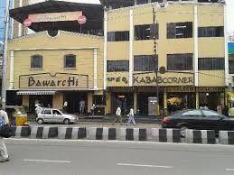
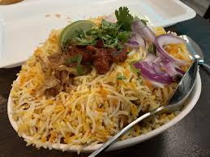

Bawarchi
Bawarchi is one of the most popular biryani spots in Hyderabad. It is famous for its spicy and aromatic chicken biryani. People often wait in long lines because the taste is worth it. The restaurant is simple but the food quality is excellent.

